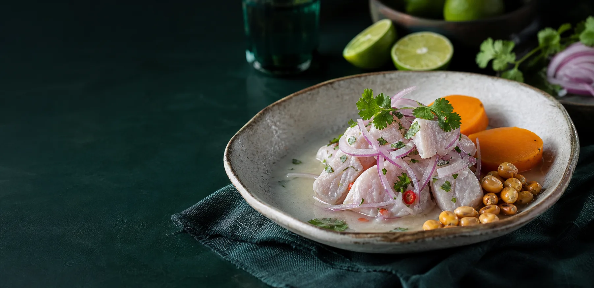
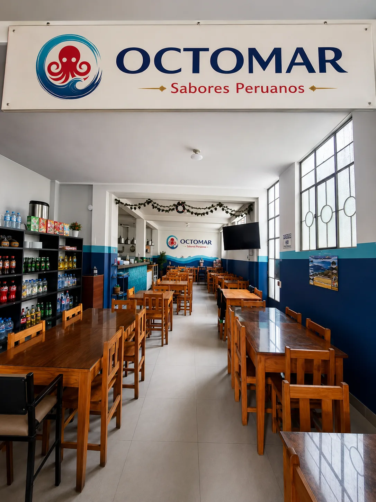
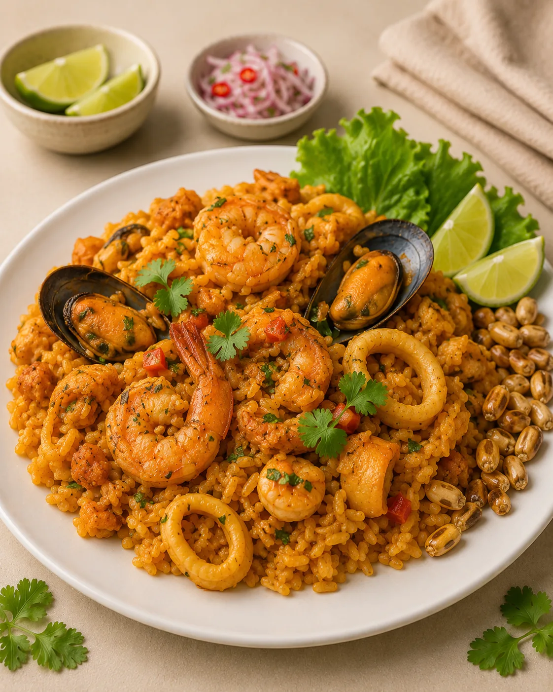
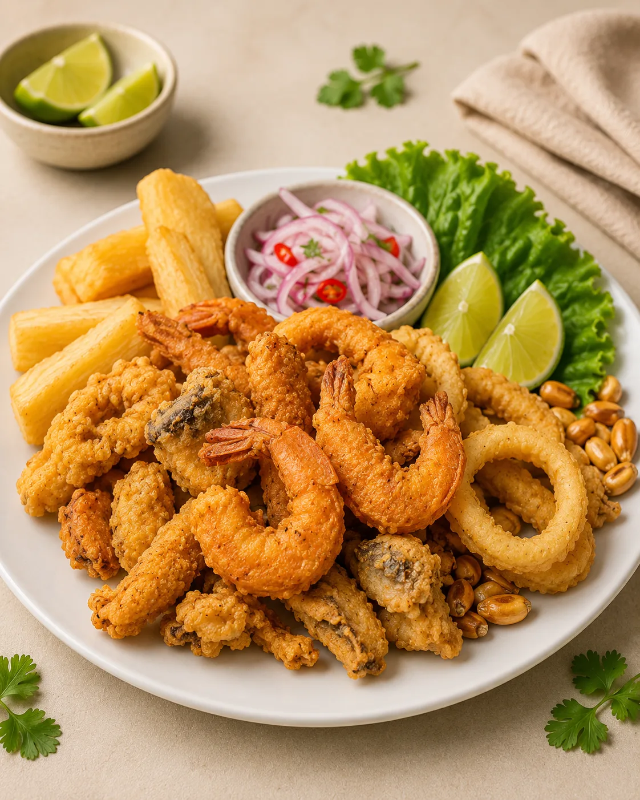
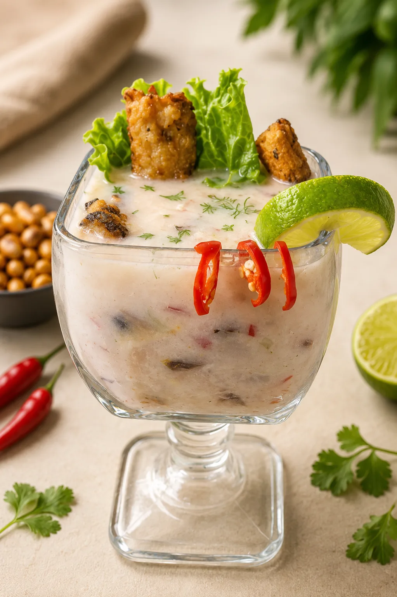
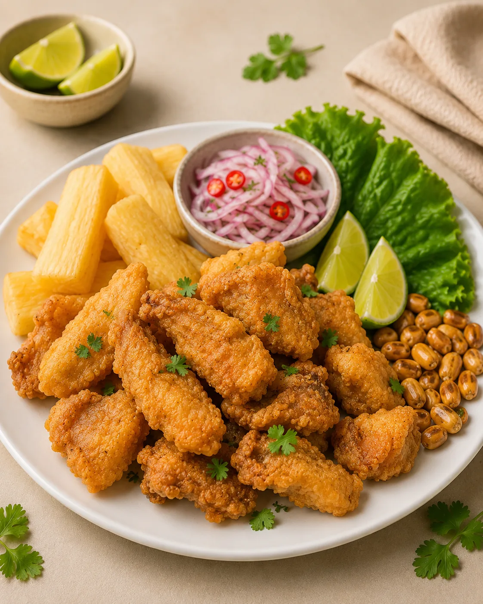
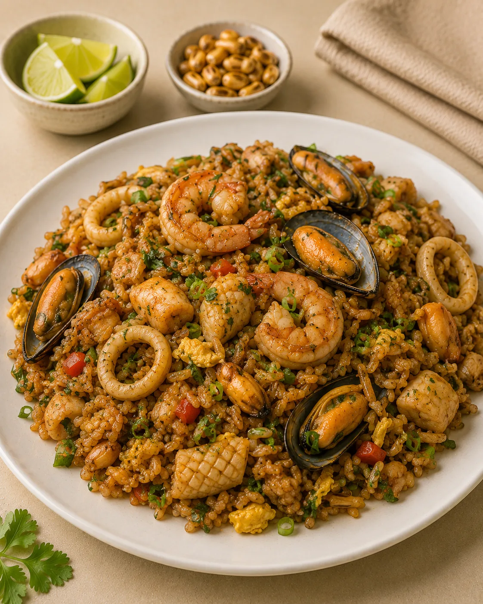

Ingredientes frescos
Seleccionados para preservar su sabor, textura y calidad.

Restaurante peruano y marino
Frescura del mar, tradición peruana y sabores preparados para compartir.

Nuestra esencia
Somos un restaurante dedicado a compartir los sabores más representativos de la gastronomía peruana. Preparamos cada plato con ingredientes frescos, recetas tradicionales y una presentación que convierte cada visita en una experiencia especial.
Seleccionados para preservar su sabor, textura y calidad.
Recetas que celebran nuestra costa y tradición culinaria.
Un espacio pensado para compartir y volver.
Favoritos de la casa
Platos preparados al momento, con porciones generosas, ingredientes frescos y todo el sabor marino de Octomar.
Pescado fresco, limón, ají, cebolla roja y acompañamientos tradicionales.

EspecialidadArroz sazonado al estilo peruano con una selección generosa de mariscos.

RecomendadoCrocantes del mar, yuca dorada y salsa criolla con el toque de la casa.

Intensa, cítrica y refrescante, con pescado fresco y ají peruano.

Bocados dorados y crocantes acompañados de salsa criolla y limón.

NuevoArroz salteado al wok con mariscos, huevo y el toque especial de la casa.
Pide desde donde estés
Conoce la aplicación de Octomar, revisa nuestra carta y disfruta tus sabores peruanos favoritos de manera rápida y sencilla.
Momentos Octomar
Una mirada a nuestros sabores, detalles y al ambiente que queremos compartir contigo.
Visítanos
Ven a disfrutar la frescura y el sabor de nuestra cocina peruana.
Información
Hablemos
Déjanos tus datos y prepara tu mensaje para conversar directamente con nosotros por WhatsApp.